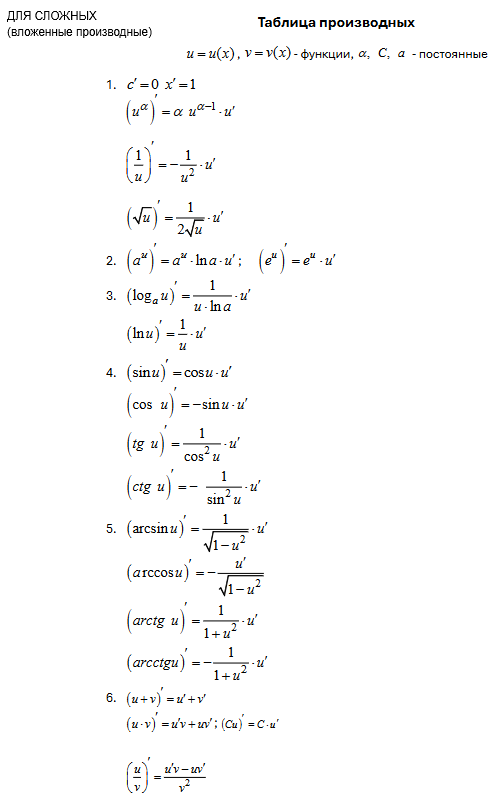

1. Что говорил преподаватель
- Главная тема занятия — производные сложных функций. Это один из основных вопросов экзамена.
- На экзамене разрешено пользоваться таблицей производных. Выводить табличные формулы не потребуется.
- Контрольные работы: решения, бездумно переписанные из нейросетей, могут быть оценены в 0 баллов. Это не означает автоматический недопуск к сессии.
- Оформление: сначала производная внешней функции с сохранением аргумента, затем производная внутренней. Только после этого упрощение.
- Ручной ввод ответов: преподаватель рекомендует сохранять порядок множителей из формулы, поскольку система может не распознать перестановки.
- Скобки обязательны, особенно перед отрицательными выражениями.
- Домашнее задание: пройти задания 3.1–3.5; 3.6 тоже можно выполнить.
- Сроки: до следующего занятия. КР 2 до 14.11.
2. Основные формулы
Производная сложной функции
Пример оформления:
((3x − 1)³)' = 3(3x − 1)² · 3
= 9(3x − 1)²
Таблица производных
Сложные производные
Для сложных производных (произведение, частное, композиция функций) используются специальные правила:

Формулы сложных производных
Правила дифференцирования
Параметрически заданные функции
Если
x = x(t) и
y = y(t), то:
При
x't ≠ 0
Преподаватель подчеркнула: в технических задачах такие функции встречаются часто. Формулу обязательно освоить.
Неявно заданные функции
Дифференцируем обе части уравнения, считая y функцией от x.
Например:
x² + y² = 4
2x + 2y · y' = 0
y' = −xy
Логарифмическое дифференцирование
Применяется для сложных произведений, дробей, корней и степенно-показательных функций.
Например:
y = xx
y' = xx · (ln(x) + 1)
3. Нюансы, на которые обращал внимание преподаватель
- Не путать cos(x²) и cos²(x) — производные разные.
- При дифференцировании сложной функции внутренний аргумент сохраняется.
- Не забывать множитель u'.
- Для au(x) обязательно учитывать ln(a).
- В неявных функциях (y²)' = 2y · y', а не просто 2y.
- При параметрическом задании делить производную y по t на производную x по t.
4. Что делать дальше
- Пройти тренажёры раздела 3, задания 3.1–3.5, по возможности 3.6.
- Выучить таблицу и правила производных.
- Тренироваться оформлять производные сложных функций по образцу преподавателя.
- Подготовиться к следующему занятию: уравнение касательной, формула Тейлора, свойства дифференцируемых функций.
Главное: преподаватель считает нахождение производных сложных функций одним из важнейших навыков первого семестра наряду с интегралами.
← Вернуться к расписанию